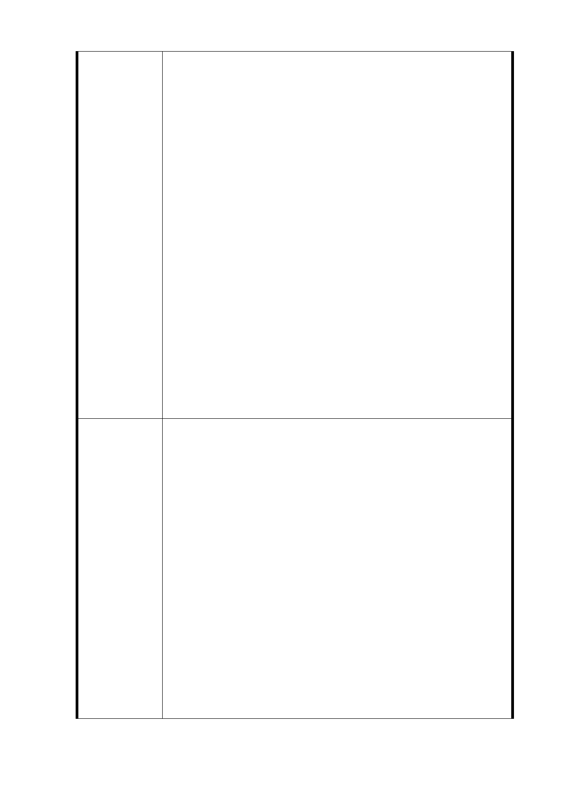

示全案將採「以屋就樹」的方式進行開發，然經檢視規
劃內容，僅保存部分列冊受保護樹木，未將基地內原有
珍貴之綠地資源納入原地保留的範圍，建議應重新檢討
都市計畫土地使用分區、開發量體之配置，避免珍貴綠
地資源再受破壞。
二. 本案開發基地周邊社區多屬防震係數較低的老舊建
物，應盡量降低基地建蔽率與容積率，以增加基地內之
開放空間，做為緊急防災空間之使用。
三. 本案基地範圍具有高度地質上的疑慮，且開發面積已達
開發行為應實施環境影響評估細目及範圍認定標準第
31 條第 12 款「安養中心、護理機構或長期照護機構、
養護機構、安養機構等老人福利機構，其興建或擴建工
程符合第一款第一目至第九目規定之一。」第 8 目「位
於都市土地，申請開發或累積開發面積五公頃以上。」
之標準。應先進行環境影響評估，確認開發規模符合當
地環境涵容量，始得進行都市計畫變更審議程序。
四. 台北大巨蛋已確定是個違法的弊案，建請北市府盡速與
遠雄解約，拆除大巨蛋主體、商場與旅館棟，選擇保留
遠雄已興建之辦公大樓、影城兩棟建築物變更使用為公
營住宅，分散廣慈社福園區之開發量體，以解決當地環
境含容量不足的問題。
一. 廣慈社福園區除原有大量老樹外，亦有原廣慈博愛院建
築拆除後之空地，建議本變更都市計劃案應採社會福利
特定專用區之方式，配合基地老樹與空地之現況，進行
社福園區開發量體之配置。
二. 本基地應降低建蔽率與容積率，優先保留大面積開放空
間作為緊急防災疏散需求使用。降低容積率與建蔽率
建議辦法
後，不足之公營住宅戶數，改由其他適當之公有土地來
闢建。
三. 本案應依環境影響評估法之相關規定辦理環境影響評
估作業，未通過環境影響評估前，應停止都市計畫變更
審議程序。
四. 台北大巨蛋弊案目前已確定遠雄處於違約狀態，北市府
可依照 BOT 興建營運契約與遠雄無償解約，其他如建議
內容所述。
- 35 -